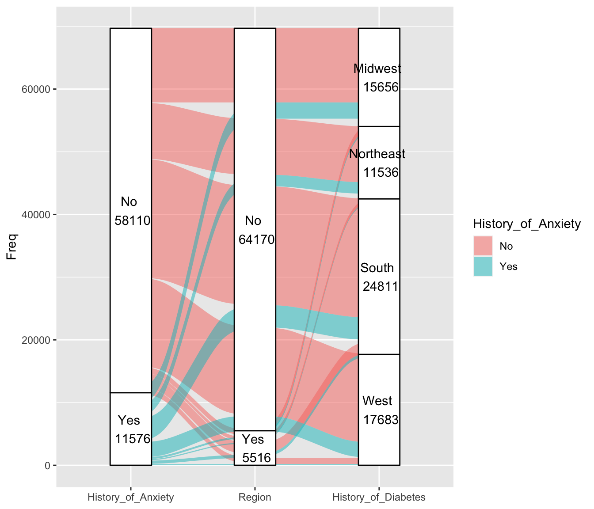

Chapter 4 Results
##Percentage of interviewees with Anxiety Over 4 years, by gender##

Although the population interviewed each year was not a fixed group of people, we have no way of knowing whether the same group of people had a change in their mental health during those years. However, according to the graph above, the percentage of interviewees with anxiety disorders has increased yearly—both the percentage of males and females. On the male side, we can see that the increase is relatively small, but there is no sign of a decrease. The increase from 2018 to 2019 is more significant on the female side. The increase is almost 50% of those with anxiety disorders in 2018. The increase continues each year slowly after that. We can also note that the proportion of women with anxiety disorders is greater than that of men, with almost 25% of women having anxiety disorders by 2021.
##Anxiety and Identity: The Intersection of Race and Sex##

Anxiety among different genders still follows the pattern from the first plot, with females being more likely to experience anxiety than males. However, if we break down the data by race, we can see that females in the “other” category are more likely to experience anxiety than Black and Asian females, compared to males.
##The Burden of Chronic Pain: Exploring the Prevalence and Impact of Chronic Pain among sex##

##Anxiety vs. Physical Diseases##
In the above five plots, the x-axis represents the interviewee population’s different responses to the history of Anxiety. The y-axis corresponds to the responses for other physical diseases. For each response to Anxiety, we tried to find the proportion of responses for other diseases. For example, the first graph contains variables of history of Anxiety and history of heart disease. Among those who had Anxiety, more than 75% chose no, which means more than 75% of people do not have heart disease. After comparing Anxiety with other diseases, we can see that the percentage of people who answered yes to both asthma and a history of Anxiety is the highest among the five diseases. We can probably assume that there is a relationship between them.
##Exploring the Relationship Between Diseases##
The loading plots include vectors for each disease, including anxiety. We note that the vectors for anxiety disorders and asthma patients are relatively close. From our study of the biplot, we know that forming a small angle means that the two variables are positively correlated. Combining this with our findings in the previous heatmap, there is a link between anxiety and asthma. Second, we can also note that the angle between the history of anxiety and other disorders is between 75 and 100 degrees, which means they are not likely to be correlated.
##Anxiety Among Ages##

The proportion of anxiety is relatively even across all ages. It remains below 25 percent. However, it is easy to see from the graph that the older the age, the lower the proportion. The prevalence of anxiety disorders in 23- and 24-year-olds is a little higher than in other age groups. The younger the person, the smaller the number of people who have had anxiety disorders. By age 65, the percentage had dropped to less than 12 percent.
##Can smoking reduce anxiety?##

According to our perceptions, smoking is a form of stress relief for some people who have just started smoking. Many smokers experience relief from anxiety after smoking. But is this true? The chart above divides the population into smokers and non-smokers and compares whether they have ever suffered from anxiety. About 27 percent of occasional smokers had anxiety disorders. About 22 percent of occasional smokers had anxiety disorders. About 19% of the never smokers had anxiety disorders. Looking at the graph, we can conclude that smokers are at least eight percent more likely to have anxiety disorders than non-smokers.
##Happier Work and Marriage: The Key to Reducing Anxiety?##

Mosaic plots are used for visualizing data from two or more qualitative variables to show their proportions or associations. Based on the plot above, we can see that people who are unmarried and unemployed are more likely to have Anxiety than other people. At the same time, people who are unemployed have slightly higher chance to be unmarried.
##Geography and the LGBT+ Community: Variations in Anxiety Risk##

Based on the plot, we can see that there is a lower concentration of LGBT+ individuals living in the southern and midwestern regions of the United States compared to other parts of the country. This may be due to a variety of factors, such as a lack of supportive communities or discrimination. However, the data also suggests that those who do live in the south and midwest are more likely to experience anxiety than those living in other regions. This could be a result of the challenges and barriers that they face in these areas, such as a lack of acceptance and support. Overall, this suggests that location can play a significant role in the mental health and well-being of LGBT+ individuals.